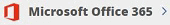

Grant permissions to enable shared mailboxes
Contributors
 Download PDF of this page
Download PDF of this page
You can grant permissions to enable shared mailboxes within NetApp SaaS Backup for Microsoft 365.
-
Click from the left navigation pane.
-
Click the Microsoft 365 link.

-
Click Grant Consent.
You are redirected to the Azure authorization page for authentication.
-
Select your tenant account.
-
Accept the permissions.
Your shared mailboxes will be discovered during the next scheduled Auto Sync or you can perform a Sync Now. If you Sync Now, it will take a few minutes for your shared mailboxes to be discovered. -
To access shared mailboxes after an Auto Sync or a Sync Now do the following:
-
Click from the left navigation pane.
-
Click Microsoft Exchange Online.
-
Click the number of unprotected mailboxes.
-
Click the Shared tab.
-
 Edit on GitHub
Edit on GitHub